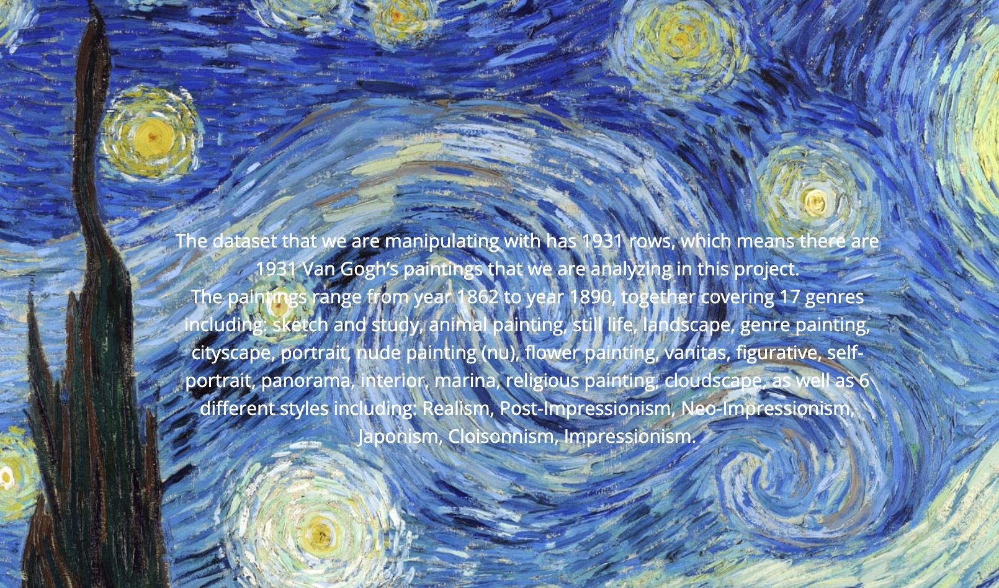
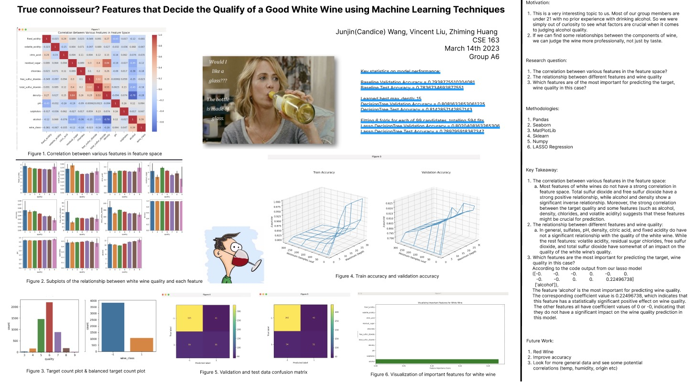
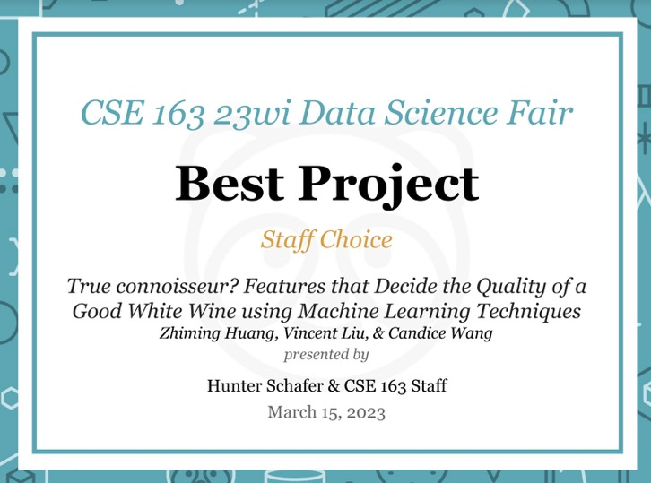

About me
My name is Zhiming Huang, you can also call me Russel. I am a student in University of Washington. My major is Informatics, and I focus on Data Science and UX design. I include some projects I did in this website. If you want to see more, this is my Linkedin webpage.
In daily life, I like listening to Cantonese music. Miriam Yeung and Joey Yung are my favorite singers. I also like watching NBA games, and I am a Lakers fan.
Portfolio
- Color Useage in Vincent Van Gogh’s paintings
-

This project analyzes the use of colors by Vincent van Gogh in his works throughout his career from year 1862 to 1890. The significance of this project is finding patterns and connections between the use of color as an artistic element for expression of ideas in different styles, genres, and historical time periods. The project used language R for data analysis and a R framework Shiny to build an interactive web visualization.
- True connoisseur? Features that Decide the Qualify of a Good White Wine using Machine Learning Techniques
-

Link for the projectand report.
In this project, we are trying to find our which feature palyed the most important role in the quality of white wine. We used Python to generate a correlation heatmap using the seaborn library to visually represent the correlation matrix. We also generated subplots of histograms to visualize the distribution and relationship between each feature and wine quality and trained a Lasso Decision Tree model, which combines the Lasso regularization technique with decision tree-based feature selection, on the dataset.
This is the best project elected by Professor and Teaching Assistants.
- Mocha
-

- Cappuccino
-

Foamed milk with espresso, topped with cinnamon shavings